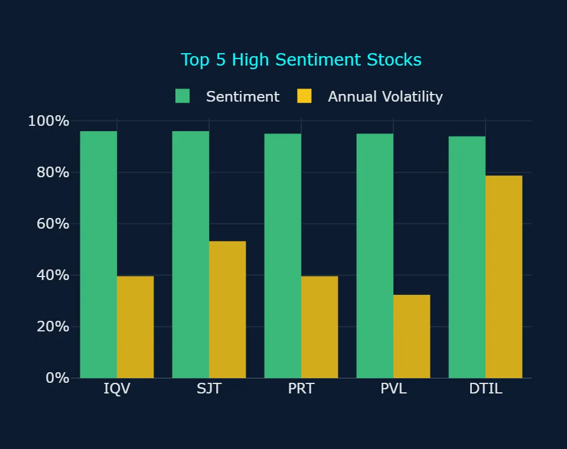
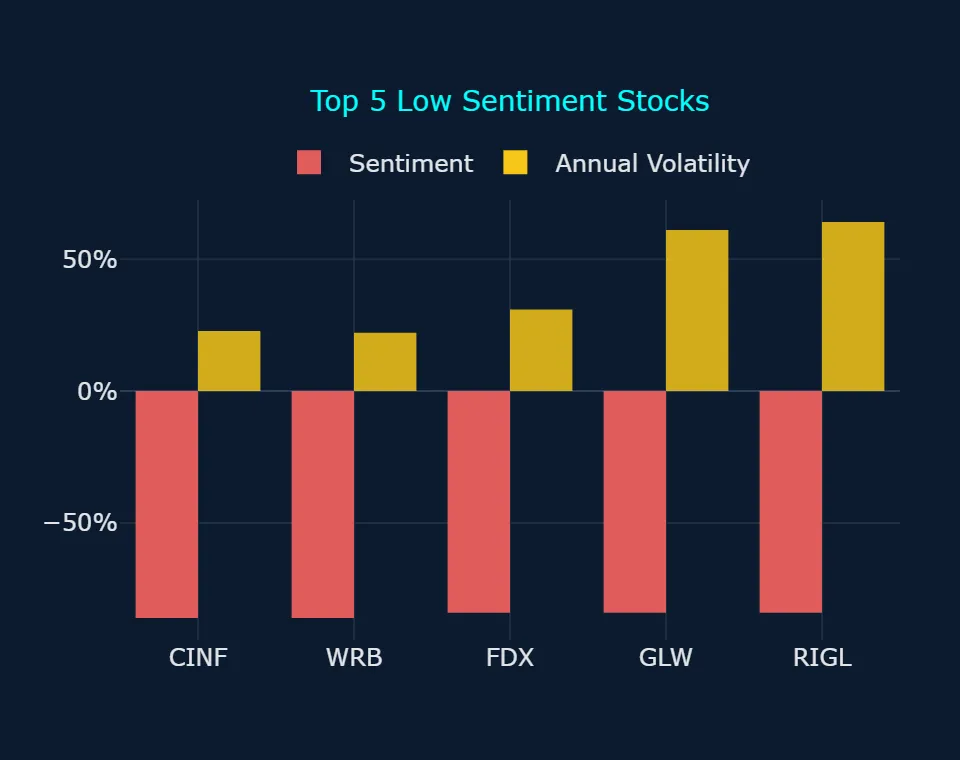
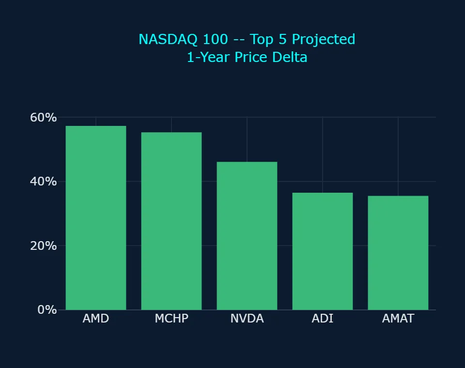
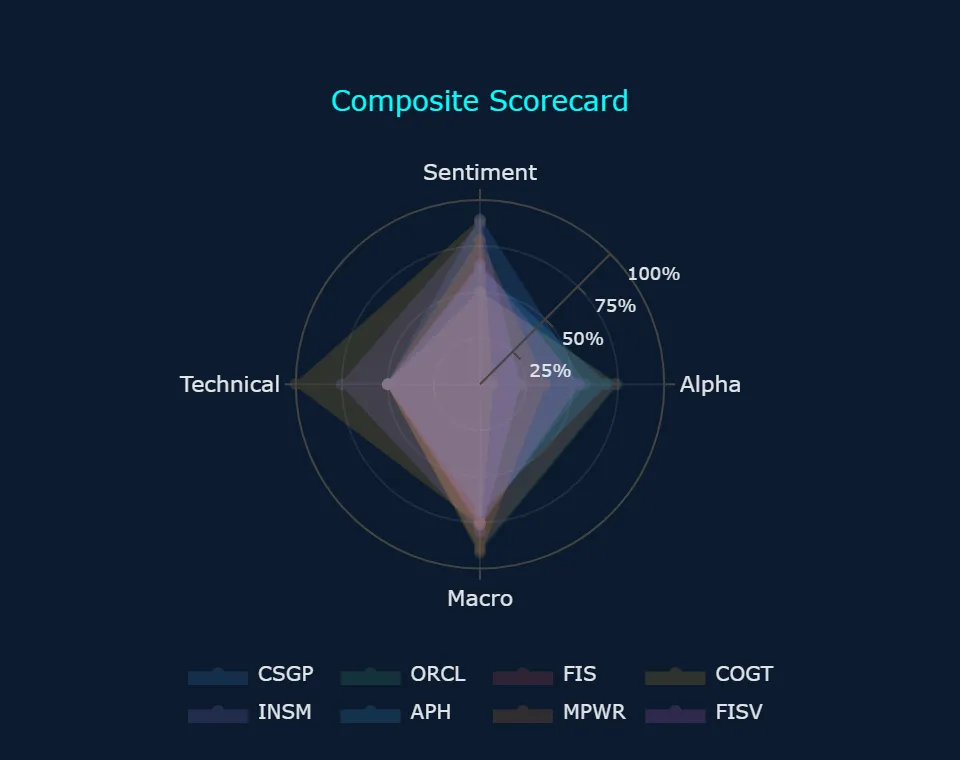
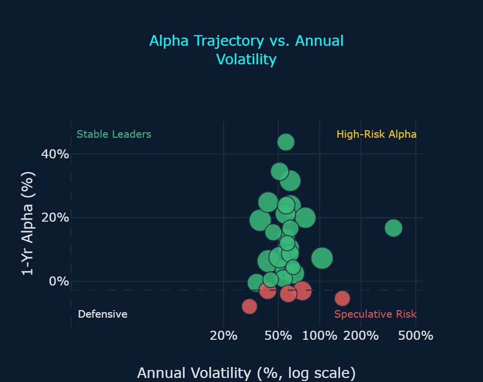
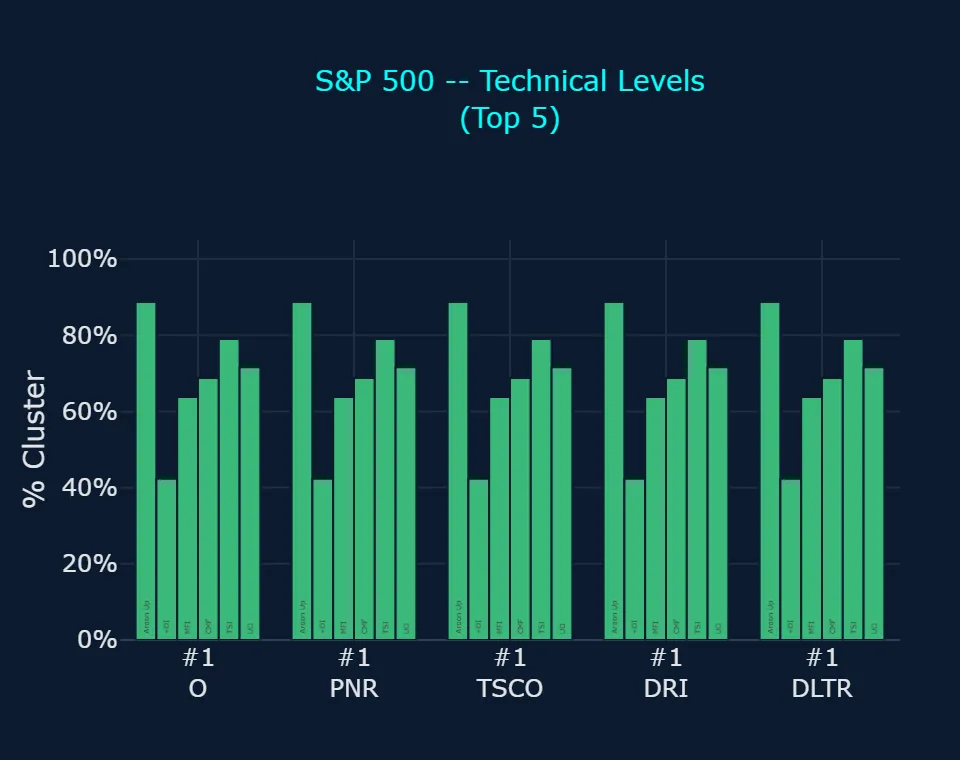
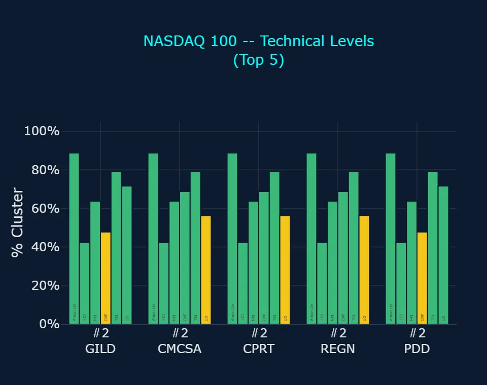
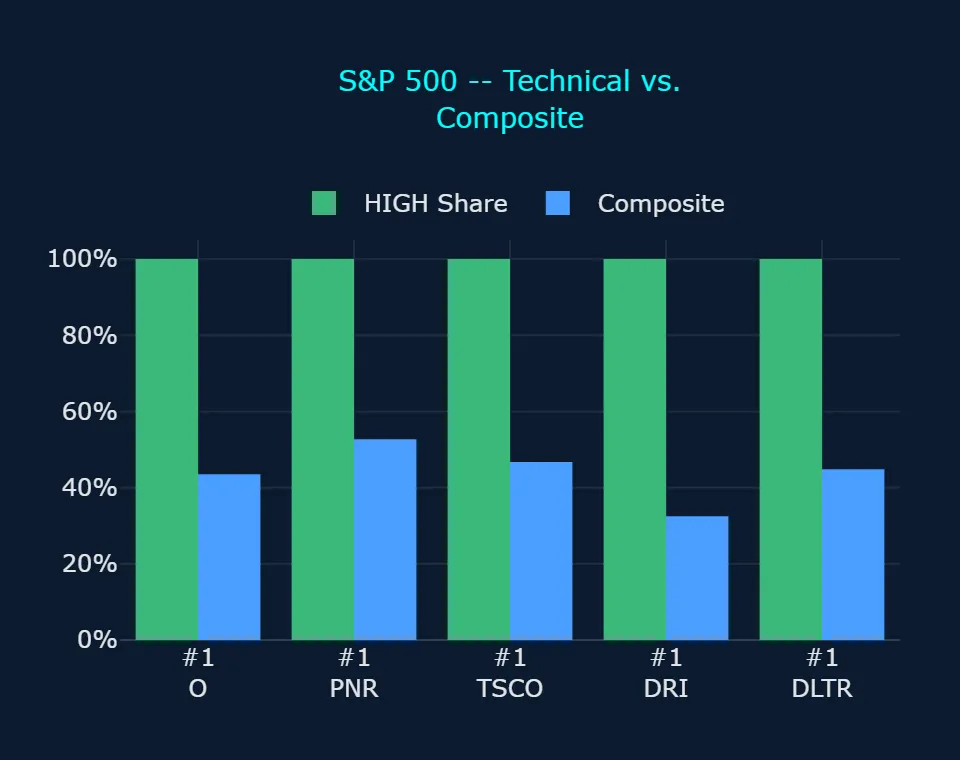
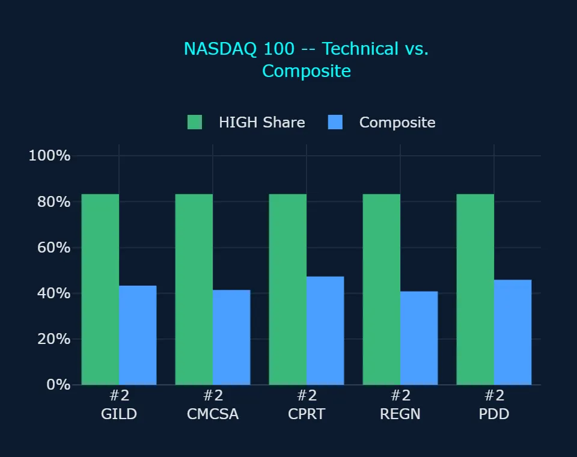

Zoonova AI: Pre-Market Quantitative Briefing – November 26, 2026
Session Quantitative Briefing: The Zoonova AI Intelligence Engine executes a hybrid architecture combining a proprietary Quad-Ensemble machine learning framework with Google Gemini Flash for real-time contextual synthesis and semantic macroeconomic grounding. The quantitative pipeline integrates four specialized estimators: Random Forest Regressor (RFR) for baseline structural stability, eXtreme Gradient Boosting (XGB) optimized for residual loss minimization, Categorical Boosting (CAT) for high-cardinality categorical signal processing, and Temporal Fusion Transformer (TFT) for multi-horizon price and volatility forecasting.
Zoonova AI: Pre-Market Momentum & Liquidity Report
1. QUANTITATIVE MODEL OVERVIEW & SIGNAL METRICS
Zoonova integrates a Quad-Ensemble predictive architecture consisting of the Random Forest Regressor (RFR), eXtreme Gradient Boosting (XGB), Categorical Boosting (CAT), and Temporal Fusion Transformer (TFT) to project forward price targets and evaluate excess alpha probabilities. Unstructured narrative sentiment is quantified via VADER linguistic analysis, while structural regime transitions and breadth clustering are modeled through BIRCH anomaly detection.
- SPY (ETF) closed at $716.70 on 2026-11-25 (cite: Zoonova, 2026-11-25) with a negative sentiment score of -81.0% and annualized volatility of 17.51%, while the Quad-Ensemble model projects a 1-year price target of $800.01 (Zoonova, 2026-11-25), indicating an implied expansion of +11.6%.
- QQQ (ETF) closed at $633.93 on 2026-11-25 (cite: Zoonova, 2026-11-25) supported by positive sentiment of +94.0% and annualized volatility of 23.66%, with predictive models projecting a 1-year price of $766.32, generating an expected 1-year alpha of 9.27% (Zoonova, 2026-11-25) and an implied gain of +20.9%.
- DIA (ETF) closed at $501.27 on 2026-11-25 (cite: Zoonova, 2026-11-25) with sentiment at -8.0% and annualized volatility of 15.54%, facing an expected 1-year alpha of -7.82% against a projected 1-year price of $520.30 (Zoonova, 2026-11-25).
- Defensive benchmarks indicate steady capital preservation, as BND (ETF) closed at $71.60 on 2026-11-25 with annualized volatility of 4.39% and a 1-year price target of $75.89 (Zoonova, 2026-11-25), while GLD (ETF) closed at $327.45 on 2026-11-25 with sentiment of -60.0% and a 1-year target of $338.00 (Zoonova, 2026-11-25).
- Mega-cap technology equities show mixed momentum, as AAPL closed at $355.58 on 2026-11-25 with 0.0% sentiment and a 1-year price target of $369.35 (Zoonova, 2026-11-25), AMZN closed at $244.43 on 2026-11-25 with 0.0% sentiment and a 1-year target of $260.37 (Zoonova, 2026-11-25), and GOOGL closed at $273.10 on 2026-11-25 with -13.0% sentiment and a 1-year target of $291.06 (Zoonova, 2026-11-25).
2. SENTIMENT INSIGHTS – TOP 5 HIGH & LOW
Top 5 High Sentiment Stocks
| Ticker | Company Name | Sentiment Score | Primary Catalyst / Driver |
|---|---|---|---|
| IQV | IQVIA Holdings Inc | +96.0% | IQVIA Holdings received industry leadership recognition for its AI-enabled quality and regulatory life sciences platforms following raised full-year financial guidance (PR Newswire, 2026-11-24). |
| SJT | San Juan Basin Royalty Trust | +96.0% | San Juan Basin Royalty Trust declared no cash distribution for November 2026 as accumulated excess production costs and subdued regional natural gas pricing extended payout suspensions (PR Newswire, 2026-11-19). |
| PRT | PermRock Royalty Trust | +95.0% | PermRock Royalty Trust declared a monthly cash distribution of $0.008479 per unit for November 2026 supported by higher realized crude oil sales prices (PR Newswire, 2026-11-19). |
| PVL | Permianville Royalty Trust | +95.0% | Permianville Royalty Trust announced a monthly cash distribution of $0.009500 per unit for November 2026 underpinned by steady production receipts across Permian and Haynesville acreage (Business Wire, 2026-11-18). |
| DTIL | Precision Biosciences Inc | +94.0% | Precision BioSciences advanced clinical stage gene-editing candidates following positive symposium updates and the completion of a $125 million underwritten equity offering (Business Wire, 2026-11-05). |
Top 5 Low Sentiment Stocks
| Ticker | Company Name | Sentiment Score | Primary Friction / Risk Factor |
|---|---|---|---|
| CINF | Cincinnati Financial Corp. | -86.0% | Cincinnati Financial faced depressed sentiment after reporting a third-quarter net income contraction linked to elevated catastrophe losses and underwriting margin headwinds (PR Newswire, 2026-11-13). |
| WRB | W.R. Berkley Corp. | -86.0% | W.R. Berkley saw sentiment soften after third-quarter revenue missed consensus forecasts while Wall Street brokerages maintained a Reduce consensus rating (MarketBeat, 2026-11-26). |
| FDX | Fedex Corp | -84.0% | FedEx recorded negative sentiment following an operational runway overrun involving an MD-11 cargo freighter at Miami International Airport on Thanksgiving eve (The Deep Dive, 2026-11-26). |
| GLW | Corning, Inc. | -84.0% | Corning experienced selling pressure and depressed sentiment as an unwind in AI optical networking positioning triggered sector-wide profit taking (TradingView, 2026-11-25). |
| RIGL | Rigel Pharmaceuticals | -84.0% | Rigel Pharmaceuticals saw negative sentiment after third-quarter earnings per share missed analyst consensus estimates despite expanding product revenues (MarketBeat, 2026-11-05). |
3. ALPHA PROBABILITY & PRICE DELTA LEADERBOARD – 1-YEAR HORIZON
S&P 500 – Top 5 High Alpha Probability (1yr)
| Ticker | Prev Close 2026-11-25 ($) | 1-Yr Target Price ($) | Alpha Probability (%) | Implied Excess Alpha (%) | 10%+ Alpha? |
|---|---|---|---|---|---|
| ORCL | $103.88 | $140.52 | 67.00% | 23.64% | Both Yes |
| FIS | $27.64 | $36.15 | 65.99% | 19.17% | Both Yes |
| APH | $73.08 | $84.25 | 61.55% | 3.66% | Split |
| CSGP | $34.02 | $40.12 | 51.08% | 6.32% | Split |
| FISV | $59.78 | $71.24 | 48.12% | 7.55% | Both No |
S&P 500 – Top 5 Price Delta + % Change (1yr)
| Ticker | Prev Close 2026-11-25 ($) | 1-Yr Target Price ($) | Absolute Delta ($) | Projected 1-Yr % Change (%) | Implied Excess Alpha (%) |
|---|---|---|---|---|---|
| AMD | $406.03 | $638.55 | $232.52 | 57.27% | 45.64% |
| MCHP | $57.66 | $89.57 | $31.91 | 55.34% | 43.73% |
| NVDA | $149.30 | $218.17 | $68.87 | 46.13% | 34.50% |
| MPWR | $1,194.63 | $1,710.58 | $515.95 | 43.19% | 31.56% |
| ADI | $333.11 | $454.69 | $121.58 | 36.50% | 24.87% |
NASDAQ 100 – Top 5 High Alpha Probability (1yr)
| Ticker | Prev Close 2026-11-25 ($) | 1-Yr Target Price ($) | Alpha Probability (%) | Implied Excess Alpha (%) | 10%+ Alpha? |
|---|---|---|---|---|---|
| KLAC | $134.20 | $178.20 | 40.03% | 21.16% | Split |
| NVDA | $149.30 | $218.17 | 33.90% | 34.50% | Split |
| NFLX | $59.41 | $66.03 | 33.76% | -0.49% | Both No |
| DXCM | $84.84 | $92.26 | 31.71% | -2.89% | Both No |
| MRNA | $220.84 | $234.60 | 31.36% | -5.39% | Both No |
NASDAQ 100 – Top 5 Price Delta + % Change (1yr)
| Ticker | Prev Close 2026-11-25 ($) | 1-Yr Target Price ($) | Absolute Delta ($) | Projected 1-Yr % Change (%) | Implied Excess Alpha (%) |
|---|---|---|---|---|---|
| AMD | $406.03 | $638.55 | $232.52 | 57.27% | 45.64% |
| MCHP | $57.66 | $89.57 | $31.91 | 55.34% | 43.73% |
| NVDA | $149.30 | $218.17 | $68.87 | 46.13% | 34.50% |
| ADI | $333.11 | $454.69 | $121.58 | 36.50% | 24.87% |
| AMAT | $311.18 | $421.66 | $110.48 | 35.50% | 23.88% |
4. REAL-TIME CONTEXTUAL ENRICHMENT
United States equity markets are closed on 2026-11-26 in observance of the Thanksgiving holiday, following a volatile pre-holiday session where international markets advanced and index futures stabilized, with S&P 500 futures gaining 0.3% (KSAT, 2026-11-26; Newsweek, 2026-11-25). Trading resumes on 2026-11-27 for a holiday-shortened session amidst investor evaluation of personal consumption expenditures data, third-quarter economic growth metrics, and cross-border trade discussions (Nasdaq, 2026-11-25). While broad sentiment on SPY (ETF) closed negative at -81.0% on 2026-11-25 (cite: Zoonova, 2026-11-25), specialized areas such as life sciences and high-sentiment cash trusts exhibited resilience, highlighted by IQVIA Holdings scoring +96.0% sentiment after expanding clinical artificial intelligence infrastructure (PR Newswire, 2026-11-24).
High alpha probability names in the S&P 500 continue to exhibit distinctive fundamental catalysts. Oracle Corp. (ORCL), which closed at $103.88 on 2026-11-25 (cite: Zoonova, 2026-11-25), leads the benchmark with a 67.00% 1-year alpha probability and a projected 1-year price of $140.52 (1y Alpha of 23.64%), where both models expect it to beat the benchmark by 10%+ (Zoonova, 2026-11-25). This aligns with Oracle's confirmation that its multi-gigawatt cloud infrastructure contract with OpenAI is fully funded (Oracle Statement, 2026-11-20), even as recent annual meeting governance votes drew scrutiny (Simply Wall St, 2026-11-26). Similarly, Fidelity National Information Services (FIS), which closed at $27.64 on 2026-11-25 (cite: Zoonova, 2026-11-25), shows a 65.99% alpha probability and a 19.17% 1-year alpha where both models expect it to beat the benchmark by 10%+, holding an Alpha Rating of 73.1 and Macro Alignment of 88.5 on the Main Scorecard.
Structural divergences are evident across technology hardware and semiconductor constituents. In the Main Scorecard, Costar Group (CSGP) closed at $34.02 on 2026-11-25 (cite: Zoonova, 2026-11-25) and holds the top Composite score of 66.7, though the two models disagree on the 10%+ hurdle with a 51.08% alpha probability against a 6.32% 1-year alpha. In the Tech Stock Scorecard, NVIDIA Corp. (NVDA) closed at $149.30 on 2026-11-25 (cite: Zoonova, 2026-11-25) and holds the highest rank with a Composite of 47.0 and Macro Alignment of 91.6, though the two models disagree as alpha probability registers at 33.90% while 1-year alpha stands at 34.50%. Meanwhile, anomaly detection registered 3 stocks at moderate severity and 11 stocks at low severity in the bearish direction, largely concentrated in semiconductor manufacturing equipment including LRCX, MU, and AMAT, confirming that market breadth remains bifurcated heading into late-year positioning.
5. ANOMALY DETECTION SCANNER
Direction: Bearish
Moderate Severity (3 stocks)
- J – Jacobs Solutions Inc: Bearish Short-Term (3d) Trend Anomaly, Bearish Long-Term (1w) Trend Anomaly
- LRCX – Lam Research Corp.: Bearish Short-Term (3d) Trend Anomaly, Bearish Long-Term (1w) Trend Anomaly
- MU – Micron Technology Inc.: Bearish Short-Term (3d) Trend Anomaly, Bearish Long-Term (1w) Trend Anomaly
Low Severity (11 stocks)
- AMAT – Applied Materials Inc.: Bearish Long-Term (1w) Trend Anomaly
- AMD – Advanced Micro Devices Inc.: Bearish Long-Term (1w) Trend Anomaly
- ANET – Arista Networks Inc: Bearish Long-Term (1w) Trend Anomaly
- AVGO – Broadcom Inc: Bearish Long-Term (1w) Trend Anomaly
- HPE – Hewlett Packard Enterprise Co: Bearish Long-Term (1w) Trend Anomaly
- MATX – Matson Inc: Bearish Long-Term (1w) Trend Anomaly
- MEDP – Medpace Holdings Inc: Bearish Short-Term (3d) Trend Anomaly
- MPC – Marathon Petroleum Corp: Bearish Long-Term (1w) Trend Anomaly
- PASG – Passage Bio Inc: Bearish Short-Term (3d) Trend Anomaly
- PWR – Quanta Services, Inc.: Bearish Short-Term (3d) Trend Anomaly
- STX – Seagate Technology Holdings Plc: Bearish Long-Term (1w) Trend Anomaly
Direction: Bullish
Moderate Severity (2 stocks)
- COGT – Cogent Biosciences Inc: Bullish Short-Term (3d) Trend Anomaly, Bullish Long-Term (1w) Trend Anomaly
- STOK – Stoke Therapeutics Inc: Bullish Short-Term (3d) Trend Anomaly, Bullish Long-Term (1w) Trend Anomaly
Low Severity (8 stocks)
- ALKS – Alkermes plc: Bullish Long-Term (1w) Trend Anomaly
- ANAB – AnaptysBio Inc: Bullish Long-Term (1w) Trend Anomaly
- CDW – CDW Corp: Bullish Short-Term (3d) Trend Anomaly
- DE – Deere & Co.: Bullish Short-Term (3d) Trend Anomaly
- HPQ – HP Inc: Bullish Short-Term (3d) Trend Anomaly
- INSM – Insmed Inc: Bullish Long-Term (1w) Trend Anomaly
- KRYS – Krystal Biotech Inc: Bullish Long-Term (1w) Trend Anomaly
- PTGX – Protagonist Therapeutics Inc: Bullish Long-Term (1w) Trend Anomaly
Direction: Mixed
Moderate Severity (3 stocks)
- ADI – Analog Devices Inc.: Bullish Short-Term (3d) Trend Anomaly, Bearish Long-Term (1w) Trend Anomaly
- RVMD – Revolution Medicines Inc: Bearish Short-Term (3d) Trend Anomaly, Bullish Long-Term (1w) Trend Anomaly
- TXN – Texas Instruments Inc.: Bullish Short-Term (3d) Trend Anomaly, Bearish Long-Term (1w) Trend Anomaly
6. STRATEGIC INVESTMENT ASSESSMENT
- Maintain selective exposure to high-conviction enterprise and financial software names where both models expect 10%+ benchmark outperformance, prioritizing Oracle Corp. (Alpha Rating 74.2, Macro Alignment 89.9) and Fidelity National Information Services (Alpha Rating 73.1, Macro Alignment 88.5).
- Exercise caution across semiconductor capital equipment and hardware supply chains, where BIRCH clustering confirmed bearish trend anomalies across 14 stocks, including moderate-severity alerts on Lam Research Corp. and Micron Technology Inc.
- Monitor commercial and life sciences software plays such as Costar Group (Main Scorecard Composite of 66.7) and IQVIA Holdings (+96.0% sentiment), balancing position sizing against the high annualized volatility present across growth assets.
- Maintain disciplined fixed-income duration via BND (ETF) (annualized volatility of 4.39%, projected 1-year target of $75.89) to buffer against equity multiple compression in cyclical transport and insurance sectors facing structural headwinds.
7. STOCK SCORECARD
Main Scorecard
| Ticker | Composite (%) | Alpha Rating | 10%+ Alpha? | Projected 1-Yr Change (%) | Street Consensus (Upside) | Next Earnings | Sentiment Rating | Technical Signal | Macro Alignment | Anomaly Flag | Catalyst / Risk | Market Cap | EPS Revisions (30d) | Short Interest / DTC | Options Flow | Earnings Surprise (4Q) | Bias |
|---|---|---|---|---|---|---|---|---|---|---|---|---|---|---|---|---|---|
| CSGP | 66.7% | 56.6 | Split | +17.9% | Hold (+15.0%) | 2027-02-23 | 89.5 | 50.0 | 74.3 | None | Commercial Real Estate Stabilization | $13.9B | Neutral/Flat (0.0%) | 3.4% / 3.9 DTC | Neutral / Mixed | 4/4 Beats (+11.8% avg) | Bullish |
| ORCL | 65.2% | 74.2 | Both Yes | +35.3% | Buy (+140.0%) | 2026-12-09 (in 13d) | 50.0 | 50.0 | 89.9 | None | Cloud Backlog Expansion | $298.0B | Upward (+1.2%) | 2.3% / 2.8 DTC | Bullish (Call Skew) | 4/4 Beats (+17.3% avg) | Bullish |
| FIS | 64.6% | 73.1 | Both Yes | +30.8% | Hold (+24.1%) | 2027-02-22 | 50.0 | 50.0 | 88.5 | None | Core Banking Deleveraging | $15.2B | Downward (-6.7%) | 3.8% / 3.2 DTC | Neutral / Mixed | 3/4 Beats | Neutral |
| COGT | 64.3% | 6.3 | Both No | +18.9% | Strong Buy (+54.7%) | 2027-02-15 | 89.0 | 100.0 | 75.7 | Bullish (3d/1w) | Ekitna GIST FDA Approval | $5.7B | Downward (-2.9%) | 11.2% / 6.4 DTC | Bullish (Call Skew) | 2/4 Beats | Neutral |
| INSM | 62.9% | 21.3 | Split | +22.0% | Buy (+6.3%) | 2027-02-18 | 87.0 | 75.0 | 79.8 | Bullish (1w) | Sanofi Acquisition Agreement | $37.4B | Downward (-5.1%) | 4.1% / 2.2 DTC | Bullish (Call Skew) | 3/4 Beats | Neutral |
| APH | 62.3% | 68.2 | Split | +15.3% | Buy (+45.3%) | 2027-01-27 | 62.5 | 50.0 | 68.8 | None | AI Data Center Interconnects | $172.2B | Upward (+4.5%) | 1.6% / 2.1 DTC | Bullish (Call Skew) | 4/4 Beats (+11.2% avg) | Neutral |
| MPWR | 60.8% | 35.0 | Split | +43.2% | Buy (+43.2%) | 2027-02-03 | 78.0 | 50.0 | 91.3 | None | Enterprise Data Power Delivery | $58.0B | Upward (+5.1%) | 3.2% / 2.9 DTC | Bullish (Call Skew) | 4/4 Beats (+8.6% avg) | Neutral |
| FISV | 60.0% | 53.3 | Both No | +19.2% | Hold (+8.5%) | 2027-02-08 | 65.0 | 50.0 | 76.3 | None | Project Elevate Cost Savings | $31.8B | Neutral/Flat (0.0%) | 2.4% / 2.8 DTC | Neutral / Mixed | 3/4 Beats | Neutral |
| STOK | 59.8% | 9.0 | Both No | +14.1% | Strong Buy (+31.0%) | 2027-03-15 | 75.5 | 100.0 | 66.2 | Bullish (3d/1w) | Zorevunersen Dravet Syndrome Progress | $2.1B | Downward (-21.9%) | 7.9% / 5.1 DTC | Bullish (Call Skew) | 2/4 Beats | Neutral |
| DTIL | 59.7% | 17.4 | Split | +31.5% | Buy (+295.2%) | 2027-03-10 | 97.0 | 50.0 | 88.9 | None | Gene Editing Pipeline Progress | $313.0M | Upward (+26.3%) | 4.8% / 2.1 DTC | Bullish (Call Skew) | 4/4 Beats (+14.8% avg) | Neutral |
| ADI | 57.6% | 13.1 | Split | +36.5% | Buy (+20.1%) | 2027-02-16 | 92.5 | 50.0 | 90.3 | Bullish (3d), Bearish (1w) | AI Infrastructure Power Demand | $167.6B | Upward (+1.0%) | 1.9% / 2.7 DTC | Bullish (Call Skew) | 4/4 Beats (+5.2% avg) | Neutral |
| KLAC | 56.2% | 44.4 | Split | +32.8% | Buy (+64.2%) | 2027-01-28 | 50.0 | 50.0 | 89.2 | None | Advanced Node Metrology Demand | $174.1B | Upward (+3.8%) | 1.9% / 2.4 DTC | Bullish (Call Skew) | 4/4 Beats (+6.5% avg) | Neutral |
| ANAB | 52.7% | 7.1 | Both No | +8.6% | Buy (+48.0%) | 2027-03-02 | 91.0 | 75.0 | 45.3 | Bullish (1w) | Jemperli Royalty Stream Growth | $1.4B | Downward (-12.4%) | 8.5% / 5.2 DTC | Bullish (Call Skew) | 3/4 Beats | Neutral |
| NFLX | 48.1% | 37.4 | Both No | +11.1% | Buy (+50.0%) | 2027-01-21 | 50.0 | 50.0 | 59.2 | None | Ad Tier Global Expansion | $257.0B | Neutral/Flat (0.0%) | 2.2% / 2.6 DTC | Neutral / Mixed | 3/4 Beats | Neutral |
| NVDA | 47.0% | 37.6 | Split | +46.1% | Buy (+47.4%) | 2027-02-24 | 19.5 | 50.0 | 91.6 | None | Blackwell Ultra Chip Ramp | $3.60T | Upward (+6.2%) | 1.2% / 1.1 DTC | Bullish (Call Skew) | 4/4 Beats (+6.2% avg) | Bearish |
| AVGO | 44.1% | 6.6 | Both No | +12.4% | Buy (+74.6%) | 2026-12-09 (in 13d) | 93.0 | 25.0 | 63.1 | Bearish (1w) | Custom AI Accelerator Demand | $1.44T | Upward (+3.2%) | 1.8% / 2.4 DTC | Bearish (Put Heavy) | 4/4 Beats (+4.1% avg) | Neutral |
| GLW | 44.0% | 46.5 | Both No | +20.3% | Buy (+71.8%) | 2027-01-27 | 8.0 | 50.0 | 77.8 | None | Optical Fiber AI Demand | $81.3B | Upward (+2.1%) | 2.1% / 2.0 DTC | Neutral / Mixed | 4/4 Beats (+5.8% avg) | Bearish |
| MCHP | 44.0% | 16.0 | Split | +55.3% | Buy (+54.8%) | 2027-02-04 | 33.0 | 50.0 | 92.2 | None | Embedded Microcontroller Inventory Recovery | $31.4B | Downward (-3.2%) | 4.7% / 3.4 DTC | Neutral / Mixed | 4/4 Beats (+3.2% avg) | Bearish |
| HPQ | 35.2% | 6.2 | Both No | +12.1% | Hold (-15.2%) | 2027-02-24 | 9.0 | 75.0 | 61.9 | Bullish (3d) | Memory Component Cost Pressure | $27.9B | Downward (-4.2%) | 3.1% / 2.5 DTC | Bullish (Call Skew) | 4/4 Beats (+10.7% avg) | Bearish |
| RIGL | 31.4% | 9.8 | Both No | +16.0% | Buy (+49.6%) | 2027-03-02 | 8.0 | 50.0 | 69.7 | None | Veppanu Breast Cancer Launch | $842.0M | Downward (-17.5%) | 6.2% / 4.1 DTC | Neutral / Mixed | 3/4 Beats | Bearish |
10%+ Alpha? – whether Zoonova's two 1-year models (alpha probability and price target) expect the stock to beat the benchmark by 10%+. “Both No” is common: 10% is a high bar.
Tech Stock Scorecard
| Ticker | Composite (%) | Alpha Rating | 10%+ Alpha? | Projected 1-Yr Change (%) | Street Consensus (Upside) | Next Earnings | Sentiment Rating | Technical Signal | Macro Alignment | Anomaly Flag | Catalyst / Risk | Market Cap | EPS Revisions (30d) | Short Interest / DTC | Options Flow | Earnings Surprise (4Q) | Bias |
|---|---|---|---|---|---|---|---|---|---|---|---|---|---|---|---|---|---|
| NVDA | 47.0% | 37.6 | Split | +46.1% | Buy (+47.4%) | 2027-02-24 | 19.5 | 50.0 | 91.6 | None | Blackwell Ultra Chip Ramp | $3.60T | Upward (+6.2%) | 1.2% / 1.1 DTC | Bullish (Call Skew) | 4/4 Beats (+6.2% avg) | Bearish |
| INTC | 45.1% | 22.3 | Split | +30.0% | Hold (+78.0%) | 2027-01-20 | 33.5 | 50.0 | 87.8 | None | Data Center AI Momentum | $293.0B | Downward (-51.1%) | 4.2% / 3.1 DTC | Bearish (Put Heavy) | 3/4 Beats | Bearish |
| AVGO | 44.1% | 6.6 | Both No | +12.4% | Buy (+74.6%) | 2026-12-09 (in 13d) | 93.0 | 25.0 | 63.1 | Bearish (1w) | Custom AI Accelerator Demand | $1.44T | Upward (+3.2%) | 1.8% / 2.4 DTC | Bearish (Put Heavy) | 4/4 Beats (+4.1% avg) | Neutral |
| META | 43.0% | 6.6 | Both No | +12.0% | Buy (+38.1%) | 2027-01-26 | 65.0 | 50.0 | 61.6 | None | AI Monetization Across Apps | $1.54T | Downward (-2.8%) | 1.3% / 2.0 DTC | Neutral / Mixed | 3/4 Beats | Neutral |
| TSLA | 40.7% | 5.6 | Both No | +12.2% | Buy (+10.7%) | 2027-01-27 | 56.5 | 50.0 | 62.1 | None | Cybercab Autonomous Network Scaling | $1.22T | Downward (-6.7%) | 3.5% / 2.1 DTC | Bullish (Call Skew) | 2/4 Beats | Neutral |
| AMD | 37.9% | 2.2 | Split | +57.3% | Buy (+57.7%) | 2027-02-01 | 50.0 | 25.0 | 92.5 | Bearish (1w) | Venice Server Epyc Demand | $677.8B | Upward (+6.8%) | 2.5% / 2.2 DTC | Bullish (Call Skew) | 4/4 Beats (+6.2% avg) | Bearish |
| MSFT | 34.1% | 2.8 | Both No | +3.0% | Buy (+25.0%) | 2027-01-26 | 79.5 | 50.0 | 4.2 | None | Azure AI Infrastructure Growth | $3.64T | Upward (+2.5%) | 0.8% / 1.7 DTC | Bullish (Call Skew) | 4/4 Beats (+5.4% avg) | Bearish |
| GOOGL | 31.1% | 10.5 | Both No | +6.6% | Buy (+51.0%) | 2027-02-02 | 43.5 | 50.0 | 22.9 | None | Google Cloud AI Scaling | $3.34T | Upward (+3.5%) | 1.0% / 1.8 DTC | Bullish (Call Skew) | 3/4 Beats | Bearish |
| AMZN | 31.0% | 5.3 | Both No | +6.5% | Buy (+31.2%) | 2027-02-04 | 50.0 | 50.0 | 22.2 | None | AWS Cloud Acceleration | $2.56T | Upward (+4.1%) | 1.1% / 1.9 DTC | Bullish (Call Skew) | 4/4 Beats (+8.9% avg) | Bearish |
| AAPL | 28.2% | 5.0 | Both No | +3.9% | Buy (-2.4%) | 2027-01-28 | 50.0 | 50.0 | 8.3 | None | Record Services Revenue Momentum | $5.38T | Upward (+3.0%) | 0.9% / 1.8 DTC | Bullish (Call Skew) | 4/4 Beats (+4.8% avg) | Bearish |
| SPCX | N/H | N/H | N/A | N/A | Buy | N/A | N/H | N/H | N/H | None | Starmind Orbital Data Centers | $1.73T | N/A (Recent IPO) | 2.1% / 1.5 DTC | Neutral / Mixed | N/A (Recent IPO) | N/A |
N/H: no ML scores yet (insufficient trading history for the models).
Search-grounded columns (Street Consensus (Upside), Next Earnings, Catalyst / Risk, Market Cap, EPS Revisions (30d), Short Interest / DTC, Options Flow, Earnings Surprise (4Q)): MarketBeat (sources dated 2026-11-18 to 2026-11-26).






Educational purposes only. Not investment advice.
Zoonova AI: Pre-Market Technical Analysis Report
Defensive and retail names dominate top technical clusters with 6/6 HIGH counts, but broader index breadth remains constrained.
1. 6 CORE INDICATORS
Indicator levels (LOW / MEDIUM / HIGH) and % Cluster come from Zoonova's BIRCH model (Balanced Iterative Reducing and Clustering using Hierarchies), an unsupervised machine-learning clustering model used for pattern recognition. Each indicator is clustered across the stock universe; % Cluster is the centroid of the cluster a stock falls in.
| Indicator | Category | Role |
|---|---|---|
| ARUPAroon Up | Trend Direction | Recency of the highest high in the lookback window; collapses in bear markets, so HIGH means price keeps printing fresh swing highs. |
| +DIPositive Directional Indicator | Trend Direction | Upward directional movement relative to true range; unlike ADX it collapses in sell-offs, so HIGH confirms buyer-driven expansion. |
| MFIMoney Flow Index | Volume / Inflow | Volume-weighted RSI from 0 to 100; falls as money leaves on down days, so HIGH means inflow on up days outweighs outflow. |
| CMFChaikin Money Flow | Volume / Inflow | Close location within the bar weighted by volume; plunges negative in liquidation, so HIGH confirms sustained buying into the top of daily ranges. |
| TSITrue Strength Index | Momentum | Double-smoothed momentum from -100 to +100; deeply negative in downtrends, so HIGH shows consistent multi-period upward thrust. |
| UOUltimate Oscillator | Momentum | Buying pressure across 7-, 14- and 28-period windows from 0 to 100; sinks when closes sit near the lows, so HIGH means buyers are in control on every timeframe. |
2. TECHNICAL REGIME
| Index | Universe | All HIGH (6/6) | Avg HIGH | Aroon Up HIGH | +DI HIGH | MFI HIGH | CMF HIGH | TSI HIGH | UO HIGH |
|---|---|---|---|---|---|---|---|---|---|
| S&P 500 | 424 | 11 | 1.7/6 | 123 | 133 | 168 | 107 | 149 | 30 |
| NASDAQ 100 | 71 | 0 | 1.3/6 | 18 | 15 | 30 | 9 | 19 | 3 |
Across 424 qualifying S&P 500 constituents, 11 stocks show all indicators HIGH with an average HIGH count of 1.7, led by MFI at 168 and TSI at 149. In contrast, the NASDAQ 100 exhibits weaker breadth across its 71 constituents with 0 stocks with all indicators HIGH and an average HIGH count of 1.3, where UO registers only 3 stocks at HIGH.
3. TOP 5 BULLISH CONFLUENCE
Ranking: Rank = HIGH count (#1 = 6/6, #2 = 5/6, ...); within a rank, Sentiment (desc), then ticker. Sentiment only orders tickers within a rank; it is not a technical signal.
S&P 500 – Top 5 Bullish Confluence
| Rank | Ticker | Aroon Up | +DI | MFI | CMF | TSI | UO | HIGH | Sentiment |
|---|---|---|---|---|---|---|---|---|---|
| 1 | O | HIGH 88.7% | HIGH 42.3% | HIGH 63.8% | HIGH 68.8% | HIGH 79.0% | HIGH 71.6% | 6/6 | +91.0% |
| 1 | PNR | HIGH 88.7% | HIGH 42.3% | HIGH 63.8% | HIGH 68.8% | HIGH 79.0% | HIGH 71.6% | 6/6 | +80.0% |
| 1 | TSCO | HIGH 88.7% | HIGH 42.3% | HIGH 63.8% | HIGH 68.8% | HIGH 79.0% | HIGH 71.6% | 6/6 | +58.0% |
| 1 | DRI | HIGH 88.7% | HIGH 42.3% | HIGH 63.8% | HIGH 68.8% | HIGH 79.0% | HIGH 71.6% | 6/6 | +51.0% |
| 1 | DLTR | HIGH 88.7% | HIGH 42.3% | HIGH 63.8% | HIGH 68.8% | HIGH 79.0% | HIGH 71.6% | 6/6 | +34.0% |
S&P 500 – Signal Groups
| Rank | Ticker | Trend Direction | Volume / Inflow | Momentum |
|---|---|---|---|---|
| 1 | O | 2 of 2 HIGH | 2 of 2 HIGH | 2 of 2 HIGH |
| 1 | PNR | 2 of 2 HIGH | 2 of 2 HIGH | 2 of 2 HIGH |
| 1 | TSCO | 2 of 2 HIGH | 2 of 2 HIGH | 2 of 2 HIGH |
| 1 | DRI | 2 of 2 HIGH | 2 of 2 HIGH | 2 of 2 HIGH |
| 1 | DLTR | 2 of 2 HIGH | 2 of 2 HIGH | 2 of 2 HIGH |
NASDAQ 100 – Top 5 Bullish Confluence
| Rank | Ticker | Aroon Up | +DI | MFI | CMF | TSI | UO | HIGH | Sentiment |
|---|---|---|---|---|---|---|---|---|---|
| 2 | GILD | HIGH 88.7% | HIGH 42.3% | HIGH 63.8% | MEDIUM 47.8% | HIGH 79.0% | HIGH 71.6% | 5/6 | +90.0% |
| 2 | CMCSA | HIGH 88.7% | HIGH 42.3% | HIGH 63.8% | HIGH 68.8% | HIGH 79.0% | MEDIUM 56.3% | 5/6 | +38.0% |
| 2 | CPRT | HIGH 88.7% | HIGH 42.3% | HIGH 63.8% | HIGH 68.8% | HIGH 79.0% | MEDIUM 56.3% | 5/6 | +38.0% |
| 2 | REGN | HIGH 88.7% | HIGH 42.3% | HIGH 63.8% | HIGH 68.8% | HIGH 79.0% | MEDIUM 56.3% | 5/6 | +38.0% |
| 2 | PDD | HIGH 88.7% | HIGH 42.3% | HIGH 63.8% | MEDIUM 47.8% | HIGH 79.0% | HIGH 71.6% | 5/6 | +34.0% |
NASDAQ 100 – Signal Groups
| Rank | Ticker | Trend Direction | Volume / Inflow | Momentum |
|---|---|---|---|---|
| 2 | GILD | 2 of 2 HIGH | 1 of 2 HIGH | 2 of 2 HIGH |
| 2 | CMCSA | 2 of 2 HIGH | 2 of 2 HIGH | 1 of 2 HIGH |
| 2 | CPRT | 2 of 2 HIGH | 2 of 2 HIGH | 1 of 2 HIGH |
| 2 | REGN | 2 of 2 HIGH | 2 of 2 HIGH | 1 of 2 HIGH |
| 2 | PDD | 2 of 2 HIGH | 1 of 2 HIGH | 2 of 2 HIGH |
4. TICKER READS
S&P 500
- #1 O – 6/6 HIGH, confirming upside expansion across all three signal groups. Aroon Up and +DI establish persistent new swing highs, while MFI and CMF indicate sustained net capital inflow. With TSI and UO also at HIGH, buyers retain control across all timeframes, though a Composite of 43.5 marks the setup as Divergent alongside an Alpha Rating of 3.0. Watch: softening volume inflow or a drop in UO below the top cluster.
- #1 PNR – 6/6 HIGH, reflecting full alignment across Trend Direction, Volume / Inflow, and Momentum. Aroon Up and +DI confirm upward directional expansion, while MFI and CMF show steady buying into daily range highs. The stock carries a Composite of 52.7, resulting in a Mixed verdict paired with an Alpha Rating of 19.3. Watch: any downshift in momentum indicators from the top cluster.
- #1 TSCO – 6/6 HIGH, displaying unanimous top-cluster placement across all categories. Upward thrust remains steady with TSI and UO confirming multi-period buying pressure, while Aroon Up and +DI validate strong trend structure. The reading carries a Mixed verdict supported by a Composite of 46.7 and Macro Alignment of 38.0. Watch: weakening buying pressure across intermediate windows in UO.
- #1 DRI – 6/6 HIGH, showing persistent buyer-driven strength across lookback windows. Trend Direction, Volume / Inflow, and Momentum all register 2 of 2 HIGH, supported by strong accumulation in CMF and MFI. However, the profile is Divergent due to a low Composite of 32.5, held back by an Alpha Rating of 0.8 and Macro Alignment of 4.6. Watch: capital outflows or an easing in CMF accumulation.
- #1 DLTR – 6/6 HIGH, driven by top-cluster readings across trend, volume, and momentum indicators. Aroon Up and +DI confirm regular swing highs, while MFI, CMF, TSI, and UO show aggressive accumulation into session closes. Despite unanimous technical strength, the stock receives a Divergent verdict due to a Composite of 44.8. Watch: post-earnings volume consolidation or slips in Aroon Up.
NASDAQ 100
- #2 GILD – 5/6 HIGH, led by full representation in Trend Direction (2 of 2 HIGH) and Momentum (2 of 2 HIGH). Aroon Up, +DI, TSI, and UO reflect strong upward trajectory and persistent multi-period buying. Volume / Inflow is 1 of 2 HIGH with CMF at MEDIUM, contributing to a Divergent verdict alongside a Composite of 43.3 and Alpha Rating of 2.9. Watch: CMF to reach HIGH to confirm broader volume accumulation.
- #2 CMCSA – 5/6 HIGH, with 2 of 2 HIGH across both Trend Direction and Volume / Inflow. Buyers continue pushing price toward the upper ends of daily bars as Aroon Up, +DI, MFI, and CMF hold top clusters. Momentum is 1 of 2 HIGH with UO at MEDIUM, leaving the setup Divergent against a Composite of 41.4. Watch: UO to join the top cluster across multi-period windows.
- #2 CPRT – 5/6 HIGH, underpinned by 2 of 2 HIGH in Trend Direction and Volume / Inflow. Strong accumulation appears in MFI and CMF, while Aroon Up and +DI highlight ongoing upward expansion. Buying pressure shows slight moderation across intermediate windows with UO at MEDIUM, generating a Mixed verdict with a Composite of 47.3. Watch: UO to reach HIGH ahead of the upcoming earnings release.
- #2 REGN – 5/6 HIGH, demonstrating top-cluster strength in Trend Direction (2 of 2 HIGH) and Volume / Inflow (2 of 2 HIGH). Positive directional movement and steady capital inflows keep Aroon Up, +DI, MFI, and CMF elevated. With UO at MEDIUM, Momentum sits at 1 of 2 HIGH, yielding a Divergent verdict with a Composite of 40.8. Watch: UO to advance to HIGH to confirm uniform momentum.
- #2 PDD – 5/6 HIGH, capturing 2 of 2 HIGH in both Trend Direction and Momentum. Aroon Up, +DI, TSI, and UO confirm strong directional continuation and multi-period buying strength. Volume / Inflow is 1 of 2 HIGH as CMF sits at MEDIUM, leading to a Mixed verdict paired with a Composite of 45.9 and Macro Alignment of 61.6. Watch: CMF to climb into the HIGH cluster to confirm accumulation.
5. TECHNICAL VS. COMPOSITE MODEL CHECK
Composite is the Zoonova Scorecard (0-100), normalized across the full universe: 30% Alpha (1-year probability of beating the benchmark by 10%+), 25% Sentiment, 25% Technical (bullish minus bearish anomaly flags; 50 = none) and 20% Macro (1-year alpha percentile).
Verdict: Confirmed = strong technicals (HIGH share 75% or more) with Composite 55 or more; Divergent = one strong and the other weak (strong technicals with Composite below 45, or weak technicals, HIGH share below 50%, with Composite 55 or more); Weak = both weak; otherwise Mixed.
S&P 500 – Technical vs. Composite
| Rank | Ticker | HIGH | Composite | Verdict |
|---|---|---|---|---|
| 1 | O | 6/6 | 43.5% | Divergent |
| 1 | PNR | 6/6 | 52.7% | Mixed |
| 1 | TSCO | 6/6 | 46.7% | Mixed |
| 1 | DRI | 6/6 | 32.5% | Divergent |
| 1 | DLTR | 6/6 | 44.8% | Divergent |
NASDAQ 100 – Technical vs. Composite
| Rank | Ticker | HIGH | Composite | Verdict |
|---|---|---|---|---|
| 2 | GILD | 5/6 | 43.3% | Divergent |
| 2 | CMCSA | 5/6 | 41.4% | Divergent |
| 2 | CPRT | 5/6 | 47.3% | Mixed |
| 2 | REGN | 5/6 | 40.8% | Divergent |
| 2 | PDD | 5/6 | 45.9% | Mixed |
- O: O displays a 6/6 HIGH indicator count, but its Composite of 43.5 triggers a Divergent verdict due to an Alpha Rating of 3.0 and Macro Alignment of 31.1.
- DRI: DRI holds 6/6 HIGH indicators, yet registers a Divergent verdict with a Composite of 32.5 weighed down by an Alpha Rating of 0.8 and Macro Alignment of 4.6.
- DLTR: DLTR achieves 6/6 HIGH indicators, but a Composite of 44.8 creates a Divergent verdict despite a Macro Alignment of 64.8.
- GILD: GILD records 5/6 HIGH indicators, but its Composite of 43.3 remains Divergent due to an Alpha Rating of 2.9 and Macro Alignment of 30.6.
- CMCSA: CMCSA captures 5/6 HIGH indicators, yet its Composite of 41.4 yields a Divergent verdict reflecting an Alpha Rating of 14.7.
- REGN: REGN registers 5/6 HIGH indicators alongside a Divergent verdict driven by a Composite of 40.8 and Macro Alignment of 35.6.
6. TECHNICAL CONTEXT
- DLTR – Dollar Tree reported third-quarter fiscal 2026 adjusted diluted earnings per share of $1.16 on net sales of $5.1 billion on 2026-11-24. (Business Wire, 2026-11-24)
- CPRT – Copart announced it will release first-quarter fiscal 2027 earnings before the market opens on 2026-12-01. (Business Wire, 2026-11-17)
- PDD – PDD Holdings reported third-quarter 2026 total revenues of RMB108.3 billion on 2026-11-19. (GlobeNewswire, 2026-11-19)
- REGN – Zoonova flagged bullish trend anomalies across biopharma peers including Cogent Biosciences, Stoke Therapeutics, and Alkermes, confirming industry-level momentum supporting Regeneron and Gilead Sciences. (Zoonova, 2026-11-25)
7. TECHNICAL ASSESSMENT
Technical leadership is concentrated in consumer, industrial, and healthcare constituents with top-tier trend and momentum readings, though broader market participation remains narrow as shown by subdued average HIGH counts of 1.7 in the S&P 500 and 1.3 in the NASDAQ 100. Furthermore, multiple Divergent profiles highlight an underlying drag from weak Alpha Ratings and Macro Alignment across leading technical names. The primary risk is a loss of momentum in these concentrated leaders if volume inflow weakens, especially given prevailing bearish anomalies across broader technology hardware and semiconductor constituents.




Educational purposes only. Not investment advice.